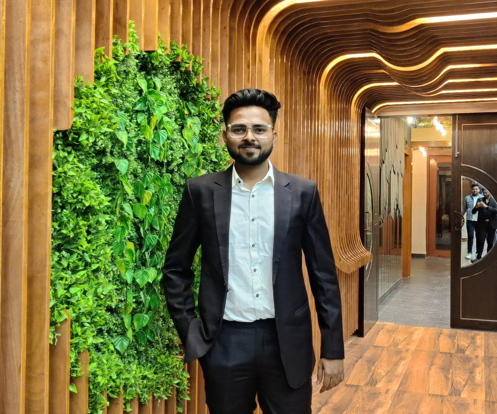

Pratham Gupta
A passionate Electronics and Communication Engineering student with strong problem-solving and web development skills. Eager to apply technical knowledge in real-world software solutions and build scalable systems.
Education
- B.Tech in Electronics & Communication - PSIT Kanpur (2022-2026)
- 12th - PCM - The Jain International School, Kanpur (2020 - 2022)
Work Experience
-
Frontend Intern - ABC Tech Pvt. Ltd. (May 2024 - July 2024)
- Developed responsive UI using HTML and JavaScript
- Collaborated with backend team for REST API integration
-
Project Intern - Hand Gesture Controlled Car Project (2023)
- Built embedded system using Arduino
- Used serial communication protocols and embedded C
Skills
- C, C++, Python
- Frontend Development (HTML, JS basics)
- Problem Solving (LeetCode, GFG)
- Embedded Systems & IoT
Achievements & Certifications
- 5⭐ C++ on HackerRank
- Certificate in Python for ML - Coursera
- Top 10 in Coding Competition - PSIT CodeFest
More